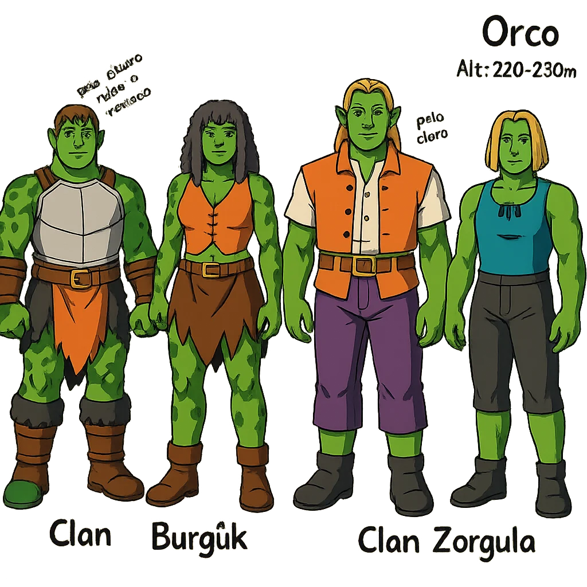

Razas

• Existen diferentes clanes y culturas dentro de cada raza, así como diferentes biomas que habitan cada uno
de
ellos. Cada raza es especialista en algo, ejemplo: las arpías son las encargadas de cuidar de la cultura del
mundo, así como de formar a quien quiera saber más.
• Cada raza tiene su propia lengua, e incluso muchas hablan una lengua común.
• Cada raza tiene sus propias creencias, aunque con dioses comunes. Ninguna creencia tiene un solo dios,
todas
son politeístas.
• Existen matrimonios interraciales, homosexualidad, bisexualidad, heterosexualidad, aunque en algunos
sitios no
está bien visto los matrimonios interraciales. También existe la adopción.
• Ninguna raza es inmortal, incluso los undead acaban pereciendo.
• Los undead son una de las razas más fuertes y la más difícil de matar. Suelen estar marginados por las
demás
razas porque les dan “asco”, por eso no suelen estar de parte de nadie, no son amistosos y peligrosos a
grandes
rasgos. No tienen género. Hay dos tipos de undead: los llamados zombie y los llamados esqueletos.
• Las arpías, los selkies, los nagas, los undead, suelen vivir al margen de las guerras entre razas.
• Las arpías se dedican a conservar la historia y el conocimiento del mundo, sea bueno o malo.
• Aunque hay ciertas ciudades que son bastante grandes y con bastante gente, en ningún momento existe la
superpoblación de ninguna raza. El índice de mortalidad y natalidad es normal y bastante igual, a no ser que
haya guerras.
• Todas estas razas de su tipo son compatibles entre sí a nivel biológico reproductivo, es decir, todas las
razas mamíferas son compatibles entre sí, todas las razas de reptiles son compatibles entre sí, etc.
• Existen varios tipos de sangre: A, B, C, D, E, F con todas sus combinaciones y RH + ó - y el 0+ y 0-
humanos
Longevidad
80-90 años.
Altura media
Mujer 1,60 m; hombre 1,80 m
Clanes
6 - Waesvalur, Virstina, Odvulf, Stolk, Harstil, Nolith
Clan Odvulf: son los humanos nórdicos que viven en Borland y se asemejan a lo que conocemos por
vikingos.
Clan Virstina: son aquellos que se asemejan a lo que conocemos como asiáticos y viven en Paradise.
Clan Nolith: viven en el oeste de Novolan cerca del territorio élfico de Erito. Viven bajo el yugo
del imperio.
Clan Harstil: son aquellos de piel oscura con manchas de vitiligo que forman curiosos patrones en su
piel. Viven en el desierto de Novolan al este y son fieles a los imperialistas.
Clan Waesvalur: imperialistas que viven en el centro de Novolan.
Clan Stolk: viven en la parte sur de Borland cerca del territorio orco.
Lengua
Vaolgani, lengua común.
Montura Racial
Caballo, dromedario/camello, grifo.
Breve Historia
Los humanos descienden de los antiguos bárbaros lycruk que eran guerreros de Borland y fue cuando
empezaron a
formarse los clanes; cada uno situado en diferentes localizaciones del mundo. Algunos evolucionaron
culturalmente a una civilización más medieval con caballeros, reyes y nobles y viven cerca de las
montañas; otros fueron más tradicionales y respetuosos con todo el mundo, mirando siempre por
los demás y por ellos mismos con samuráis y ninjas y viviendo más en las praderas y bosques; otros
se fueron al desierto y se establecieron en uno de sus grandes oasis. Los humanos se esfuerzan aún
más para lograr construir los edificios de mayor altura en el imperio, también buscan sobresalir en
la exploración y en alquimia. En principio los diferentes clanes humanos se peleaban entre ellos por
no respetar a sus congéneres, cosa que aprovecharon los trolls para atacar, llegados a un punto a
los humanos no les quedó más remedio que formar una alianza que perdura hasta hoy en día. Siempre
que un clan ha sido atacado por trolls, goblins, elfos o taurens los otros clanes estaban allí para
ayudar. Hay subyugación por parte del clan Waesvalur imperialista hacia los Nolith y los Harstil.
Orcos
Longevidad
80-90 años.
Altura media
Hembras 2,10 m; macho 2,30m.
Clanes
7 Burguk, Zorgulg, Epkagut, Hogug, Durz, Ragash, Maknok
Lengua
Zhoppethi.
Montura Racial
Lobo
Breve Historia
Los orcos cultivan originalmente una sociedad noble, guerrera y minera; pero algunos llevados por el
exceso de orgullo comenzaron una guerra interna entre los distintos clanes: los Ragash se unieron a
los Maknok contra los demás y luego iniciaron una guerra entre ellos. Los únicos que no entraron en
ambas guerras civiles fueron los Durz, aunque sí que proporcionaron cobijo a quienes no deseaban
entrar en guerra. Años después de que la situación se calmara un poco, los Ragash llevados por su
ira comenzaron a pelearse con los trolls y salieron victoriosos. Los trolls se aliaron con el resto
de sus propios clanes para vencer a este clan orco furioso. Más adelante, los Maknok hicieron lo
mismo,
pero contra los pandines, aunque esta vez, la jugada no salió bien y acabaron perdiendo. Desde
entonces hay cierta tensión entre estas tres razas; nunca se sabe qué más va a pasar. Tienen dos
minas ya que les robaron las minas a los enanos en un conflicto antiguo.

Enanos
Longevidad
90-100 años.
Altura media
Mujer 1,30 m; hombre 1,50 m
Clanes
3 Nardreag, Losgroud, Ofrar
Lengua
Varis, lengua común.
Montura Racial
Cabra, águila.
Breve Historia
Cerca de la isla de los fenrine y cernine, había unas cordilleras de montañas muy grandes las cuales
al verse afectadas por el choque de magia del origen del mundo las piedras cobraron vida creando así
la raza de los enanos. Son audaces y valientes y viven en las mismas montañas que los vió nacer
construyendo dentro de ellas grandes y hermosas ciudades. Son una raza muy terrestre, son versátiles
a la hora de moverse. Su hogar es rico en minerales por lo que los orcos avariciosos guerrearon con
los enanos hasta que ganaron y los subyugaron.
Estuvieron hasta mediados de la segunda época, prácticamente como esclavos. Después de librarse de
los orcos, el rencor aún yace en los corazones de los enanos que no olvidan.
Elfos

Longevidad
180-200 años.
Altura media
Mujer 1,60 m; hombre 1,80 m
Clanes
4 Sylwarin, Reynelis, Glynzana, Wynyra
Lengua
Eferien, lengua común.
Montura Racial
Leopardo de las nieves, ciervo, pelícaro, zorro.
Breve Historia
Tienen una visión muy superior a la de los humanos y aman la naturaleza, la vida y la música. Se
parecen bastante a los humanos y se han dado casos de matrimonios entre ambas razas. No han tenido
muchas guerras internas, son bastante pacíficos los unos con los otros. Tuvieron una guerra con los
humanos cuando éstos intentaron quedarse con su mina y al final tuvieron que huir, dando lugar a la
separación de los clanes: unos a una isla del norte (Glynzana, Wynyra) y otros a los bosques
(Sylwarin, Reynelis). Por otro lado, también tuvieron una guerra con los sauroks, ya que estos son
muy guerrilleros y los elfos pidieron ayuda a los humanos ya que no eran capaces de hacer que
retrocedieran. Al final, con la ayuda de los humanos los elfos ganaron la batalla. De vez en cuando
sí que hay algunos desacuerdos entre elfos y humanos pero por ahora no han vuelto a pelear entre
ellos (entre elfos y humanos). Se especializan en ranger.

Trolls
Longevidad
110-150, (100) años.
Altura media
Hembras 2,50 m; machos 3 m.
Clanes
4 Tanjin, Jinjin, Hakalai, Feylin.
Lengua
Igdesh, lengua común.
Montura Racial
Murciélago, titanis, jabalí.
Breve Historia
Provienen de dos tribus principales, los Karii’ka y los Dazarii’ka de goblins, que al subir a la
superficie evolucionaron. La mayoría de los trols no guardan lealtad especial a nadie que no sea su
propia tribu (clan). Los trols pueden regenerar extremidades perdidas y curar lesiones físicas
graves a un ritmo acelerado, dándoles una gran ventaja en la batalla. Los trols son tan bien
conocidos por sus habilidades regenerativas de alquímicas mezclas. Tribus militantes de los trols
son asesinos eficientes y tienen una fuerte sed de sangre. Algunos todavía se aferran a su herencia
de canibalismo y el vudú. Han tenido guerras internas y guerras con goblins, humanos y orcos;
algunas por territorio, otras simplemente herencia sin saber realmente por qué. Se conoce de una
alianza orco-troll. (HAY QUE CAMBIAR MUCHAS COSAS DE ESTE
TEXTO)
Los Jinjin tienen la peculiaridad de tener ciertos aspectos parecidos a los vampiros. Por ejemplo en
su dieta común culturalmente beben sangre de forma regular, tanto de forma caníbal como de la
mayoría de especies que tengan sangre "normal". Además se debilitan considerablemente a la luz del
día, mientras que por las noches o en la oscuridad se vuelven bastante fuertes.
Fenrines
Longevidad
90-100 años.
Altura media
Hembras 2,10 m; macho 2,30m.
Clanes
3 Gilghall, Eòghean, Bhalnull
Lengua
Odeoknasy, lengua común.
Montura Racial
Perro
Breve Historia
Una raza de caninos, gracias a la magia de la isla Fenla, se empezaron a volver
más inteligentes y a evolucionar como raza humanoide. Es una raza bastante salvaje y agresiva,
aunque sean inteligentes y capaces de razonar. Al provenir de la magia en estado puro, se
consideraban superiores a
los demás. Viven más en comunidad en la naturaleza que otras razas y se especializan en ser
guerreros. Los fenrine, que se creían muy superiores y al vivir cerca de los tauren en la misma isla
la tomaron con ellos y hubo una batalla. De ahí que no se lleven muy bien. Los fenrine fueron los
que adquirieron la inteligencia antes que los tauren.
(HAY QUE CAMBIAR COSAS DE ESTE TEXTO)
Pandines
Longevidad
90-100 años.
Altura media
Hembras 2,10 m; macho 2,30m.
Clanes
4 Rimus, Syrveus, Kerzen, Werzia
Lengua
Endoshi, lengua común.
Montura Racial
Tigre, león.
Breve Historia
Son gente pacífica y no les gustan los conflictos, pero si el conflicto viene a ellos no dudarán en
defender sus tierras y su gente. Están rodeados de un halo de misterio ya que no suelen mezclarse
con las demás razas, sin embargo los jefes sí que han interactuado con los demás, sobretodo si es
para evitar una guerra. No se sabe que tuvieran conflictos internos. Se especializan en sacerdotes
aunque sus armas favoritas son las grandes mazas a dos manos de doble pico. Son maestros con artes
celestiales y de combate cuerpo a cuerpo al usar báculo, mazas o cayado.
Cernines
Longevidad
80-90 años
Altura media
Hembras 2,10 m; macho 2,30m.
Clanes
3 Cad, Shap, Qah
Lengua
Qieccin, lengua común.
Montura Racial
Mamut.
Breve Historia
Viven en la misma isla que los fenrine. Descendientes de vacas y toros que vivían allí, poco a poco
empezaron a adquirir inteligencia (también por la magia) y ayudados por los fenrine se volvieron una
raza igual de avanzada que ellos. Lo cual fue el detonante del conflicto con los fenrine ya que
estos se vieron amenazados por la inteligencia de los cernine. Intentan ser más pacíficos pero son
bastante cabezones y tozudos, pero sensatos y fuertes; aunque los fenrine le dan guerra ellos no
piensan moverse de su sitio. Suelen ser pacíficos con las demás razas y suelen ayudar a los
forasteros independientemente de su raza. Se especializan en ser druidas.
Kattines
Longevidad
a
Altura media
Hembras a m; macho a m.
Clanes
3 Tanil, Lesoi, Yunao.
Lengua
Kattrank, lengua común.
Montura Racial
Tigres, leopardos, Dientes de Sable.
Breve Historia
Viven en la misma isla que los fenrine. Descendientes de vacas y toros que vivían allí, poco a poco
empezaron a adquirir inteligencia (también por la magia) y ayudados por los fenrine se volvieron una
raza igual de avanzada que ellos. Lo cual fue el detonante del conflicto con los fenrine ya que
estos se vieron amenazados por la inteligencia de los cernine. Intentan ser más pacíficos pero son
bastante cabezones y tozudos, pero sensatos y fuertes; aunque los fenrine le dan guerra ellos no
piensan moverse de su sitio. Suelen ser pacíficos con las demás razas y suelen ayudar a los
forasteros independientemente de su raza. Se especializan en ser druidas.
Lipunk
Longevidad
50-60 años
Altura media
Hembras 1,60 m; macho 1,70m.
Clanes
No hay.
Lengua
Lilank, lengua común.
Montura Racial
tecnología??
Breve Historia
Al no tener magia es una raza que se basa totalmente en el avance tecnológico al estilo steampunk,
su fuente principal es el vapor. Son los precursores de la clase cazarrecompensas que usan armas
basadas en el vapor. Son los creadores del primer tren mágico-tecnológico y por ello es un día que
celebran (día de la unión entre magia y ciencia). Viven en una ciudad estilo steampunk donde acude
todo aquel que quiera aprender tecnología, lugar de los mejores ingenieros e inventores
interraciales. La clase de cazarrecompensas son una clase especial.
Sauroks
Longevidad
80-90 años
Altura media
Hembras 2,50 m; machos 3 m.
Clanes
3 Olygoteus, Cekotus, Wrocius.
Lengua
Aewasy.
Montura Racial
Wyvern.
Breve Historia
Son criaturas consideradas exóticas, peligrosas. Se les conoce por ser guerreros y filósofos, gente
a la que respetar y temer. Aunque comparten con las arpías su amor por el conocimiento siempre han
sido muy egoístas con ello; no les gusta que las demás razas metan sus narices en sus cosas. Los
tres clanes siempre andan en conflictos y en alianzas entre ellos, parece ser su manera de
sobrevivir y expresarse. Siglos atrás tuvieron una guerra devastadora con los elfos quienes fueron
ayudados por los humanos, desde entonces se desentienden de ambas razas. Se han encontrado sauroks
pacíficos y deseosos de que acaben las peleas entre sus clanes e incluso han pedido ayuda a otras
razas quienes les han permitido incluso huir a sus tierras, pero nadie se atreve a intentar
comprender qué es lo que pasa para que haya tantos conflictos. Viven en la parte segura del
desierto. Tienen un gobierno político-social muy arraigado en el que basan su moral en la
supervivencia del más apto. Los adultos someten a los más jóvenes constantemente a pruebas de
instinto y supervivencia. (Inspirados en los Githyankis)
Sirenios
Longevidad
80-90 años
Altura media
Hembra 2,50 m; macho 2,70 m.
Clanes
8 Llyr, Maggiore, Aqilus, Kishi, Meriel, Deloros, Iriesa, Scartatrukh
Lengua
Yaewesh
Montura Racial
Hipocampo, liopleurodon, ichthyosaurus.
Breve Historia
Son los más civilizados de los seres acuáticos provenientes de los mismos nagas. Cuando están en el
agua todo está bajo sus leyes y son muy estrictos. Hay varias subespecies, ya que cada clan vive
alejado uno del otro y se ha adaptado a su manera de vivir (hay unos más humanoides que viven cerca
de la tierra, otros más tipo “peces de las profundidades”, etc.) Son bastante territoriales; los
sirenios de las profundidades son más “salvajes”, ya que viven muy alejados y es muy raro
encontrarlos fuera de su territorio. Al encontrarte un sirenio en la tierra su comportamiento cambia
radicalmente como si tuvieran doble personalidad; ya que al no ser su territorio se adaptan y son
más “amables”. Los sirenios de las profundidades piensan que no deberían salir a la superficie
porque
su reino es el agua y se alían a veces con los nagas para pelearse con los demás. Hubo una guerra
ancestral así, nagas + sirenios de las profundidades vs selkies y sirenios cercanos a la superficie
quienes
ganaron y desde entonces hay enfrentamientos de vez en cuando.
Selkies
Longevidad
80-90 años
Altura media
Mujer 1,60 m; hombre 1,80 m
Clanes
2 Yededri, Drirthah
Lengua
Eazkethi.
Montura Racial
??
Breve Historia
??
Nagas
Longevidad
80-90 años
Altura media
Hembra 2,50 m; macho 2,70 m.
Clanes
3 Sylmaer, Yelmaris, Orisandoral.
Lengua
Ogsali.
Montura Racial
Araripesuchus, tortuga.
Breve Historia
En un principio todos eran nagas salvajes y con el paso de los siglos un grupo de nagas empezaron a
salir a la superficie y algunos evolucionaron a los selkies que se volvieron inteligentes. Ambos
seguían conviviendo y los nagas se volvieron inteligentes también. Con el tiempo acabaron peleándose
y se acabaron distinguiendo dos razas diferentes. Actualmente siguen teniendo conflictos con los
selkies. Los Orisandoral son los más primitivos en las profundidades. Los Sylmaer son los más
inteligentes y de la superficie. Siendo así los Yelmaris por ende reinan las aguas poco profundas.
(Orisandoral significa Abismo-Ori, Profundo-Sandoral. Luego estaban los Lursandoral, Lur-Cielo,
Sandoral-Profundo.)

Fungant
Longevidad
Muy variado.
Altura media
Muy variado.
Clanes
10 Sydival, Limrad, Tunialae, Leveesu, Lavetta, Sijora, Kukkasvi, Sanaume, Pidieva, Nysgo.
Lengua
?
Montura Racial
??
Breve Historia
a?

Sectines
Longevidad
Muy variado.
Altura media
Muy variado.
Clanes
10 Jep'ri, Za'kar, Kharyon, Serkhari, Ozk'acta, Vokren, Garnac, N'naar, Bon'nan, Garn.
Lengua
?
Montura Racial
??
Breve Historia
a?
Nekines
Longevidad
?
Altura media
?
Clanes
2 Colmillo Duro, Garra Afilada.
Lengua
?
Montura Racial
??
Breve Historia
a?
Arpías
Longevidad
180-200 años
Altura media
Hembra 1,90 m; macho 2,10 m.
Clanes
Hesperis
Lengua
Todas las lenguas según se cree.
Montura Racial
No tienen montura racial, pero pueden usar monturas como otras razas. Pueden volar, por eso no
suelen necesitar monturas.
Breve Historia
Son una de las razas más antiguas que hay junto con los no muertos (undeads). Nunca se han metido en
ninguna guerra o escogido ningún bando por el que luchar o por el que deber lealtad. Se diría que
viven “en su mundo” y tienen costumbre de aceptar y perpetuar el equilibrio. Sin embargo, su ciudad
flotante, la llamada ciudad del saber o ciudad del
conocimiento, es dónde se encuentran las mejores escuelas para aprender cualquier cosa, desde algo
tan simple como cocinar hasta idiomas, o instruirte en algún arte marcial o especialidad de
cualquier tipo. Son seres tranquilos, astutos y ávidos de conocimiento; no les importa compartir su
saber con otras razas, sea cual sea, siempre que puedas pagar por lo que vayas a usar. En su ciudad
reina la paz interracial, por lo general no hay racismo y son bastante observadoras y críticas a la
hora del aprendizaje. Se podría decir que son buenas en todo, y, volando, las mejores. Siempre se
mantienen al margen. En su ciudad existe la mayor biblioteca del mundo de la que puedes comprar una
copia exacta de cualquier libro. La ciudad de las arpías en un primer momento se encontraba en el
centro del mapa rodeadas por todas las razas; y echaron a volar su ciudad con energía universal
(maná). Debajo aparecieron los goblins; pero con el trozo de tierra viven unos animales salvajes
subterráneos que acabaron evolucionando y les salieron alas, son los que mantienen a los visitantes
a raya. Al no tener mina ninguna comparten su conocimiento para poder ganar “dinero” (teal). Heredan
los recuerdos en sus genes de generación en generación.
• Sistema político: Multicracia, gobierno de un grupo de arpías formado por el/la mejor miembro de
cada clase.
Goblins
Longevidad
60-70 años.
Altura media
Hembra 1,20 m; macho 1,25 m.
Clanes
5 Asriz, Froza, Qaalasz, Zuirsict, Ydild.
Lengua
Traotkoluni, lengua común.
Montura Racial
Guepardo.
Breve Historia
En su origen eran trolls pero en vez de evolucionar como trolls y salir de las cuevas se quedaron en
el mundo subterráneo y de ahí que sean más pequeños. Son bastante salvajes, no son cultos ni
nobles y carecen de sentido común, aunque pueden socializar con otras razas, tiene uso de la razón y
hablan ambas lenguas. Le tienen como envidia a los trolls ya que ellos son como segundones, como que
“no evolucionaron bien”, tienen como un odio natural al sentirse algo abandonados y por ello se
pelearon con los trolls, aunque obviamente perdieron. También tuvieron una pelea con los humanos ya
que éstos no los consideraban como inteligentes y tras una ardua batalla con ellos quedaron en
empate e hicieron una tregua que dura hasta hoy en día. Salen más de las cuevas aunque aún viven
cerca de ellas. Se especializan en assassins y chamanes (porque la energía proviene de lo profundo
del mundo y ellos viven cerca y en las cuevas). Al irse flotando la isla de las arpías deja al
descubierto un gran hueco por el que los goblins empiezan a salir al mundo. Con el tiempo este hueco
se convirtió en la ciudad principal (capital) de los goblins.
Gigantes
Longevidad
180-200 años
Altura media
Hembra 6,50 m; Macho 6,70 m.
Clanes
Grutus
Lengua
Zauggurada, lengua común.
Montura Racial
Dragón (?)
Breve Historia
Son los más alejados en el mapa conocido. Viven en el desierto, son como unos guardianes
involuntarios, viven en un reino extenso. Por su naturaleza son bastante fuertes, pueden viajar
(esto es muy, muy raro) pero
no pueden vivir fuera de su bioma desértico. No tienen minas, no se rigen por la economía. Van
un poco a lo suyo. Son pacíficos y nunca atacan a no ser que sean atacados (son tipo golem).
Su idioma o forma de hablar consiste en el sonido que hace la arena cuando se mueve y se lanza
contra más arena.
No Muertos
Longevidad
Muchísimo.
Altura media
Variado
Clanes
?
Lengua
Variado
Montura Racial
Variado
Breve Historia
Comprendemos a cualquier raza que haya muerto y revivido.
Razas
Semi/Inteligentes
Vatrajones
.png)
Longevidad
a
Altura media
Hembra a; Macho a.
Clanes
a
Lengua
a
Montura Racial
a
Breve Historia
a